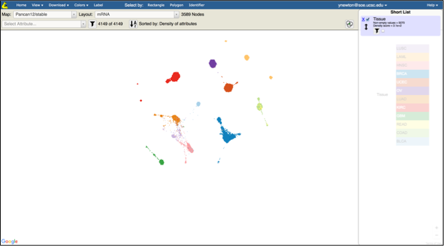
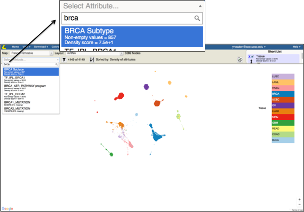
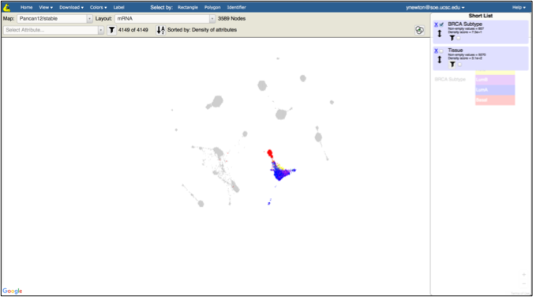
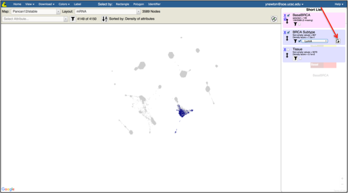
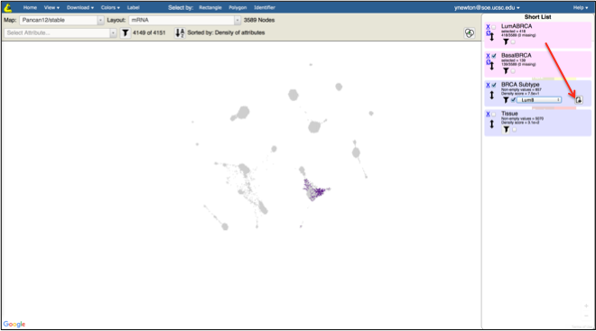
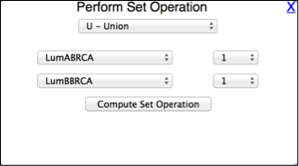
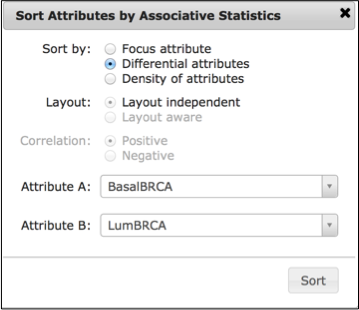
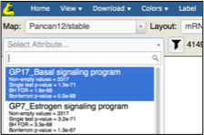

Objective:
Identify genomic events that distinguish one subtype of cancer (e.g. basal breast cancer) from another (e.g. luminal breast cancer).
Skills Covered:
- Creating a new group from an existing categorical (multi-valued) attribute.
- Using set operations to combine existing groups.
- Running statistical test to order attributes based on their differential presence/absence in one group versus another.
Steps:
- In the Tumor Map, make sure the mRNA layout is selected
- In the Short List, make sure Tissue is checked and no other attributes are checked

- Observe that breast tumors are in blue on the bottom right of the map
- In the Select Attribute type in “brca” and click on BRCA Subtype

- Observe the the breast tumors are colored by the molecular subtypes
- Uncheck Tissue attribute in the Short List

- Under the BRCA Subtype attribute click on the filter checkbox and select Basal in the drop down
- Click Save Filter next to the filter drop down

- Specify the name of the group (e.g. BasalBRCA) in the popup box
- Under the BRCA Subtype attribute click on the filter checkbox and select LumA in the drop down
- Click Save Filter next to the filter drop down

- Specify the name of the group (e.g. LumABRCA) in the popup box
- Under the BRCA Subtype attribute click on the filter checkbox and select LumB in the drop down
- Click Save Filter next to the filter drop down

- Specify the name of the group (e.g. LumBBRCA) in the popup box
- Click on Set Operations next to the Short List
- Select Union in the drop down list
- Select LumABRCA as the first attribute
- Select LumBBRCA as the second attribute
- Click on Compute Set Operation

- Specify the name of the new group (e.g. LumBRCA) in the popup box
- Click on the Sort Attributes button (next to Sorted By label)
- In the popup click on Differential attributes radio button
- Select BasalBRCA as the first attribute
- Select LumBRCA as the second attribute
- Click Sort

- Wait until Computing statistics now … disappears
- Observe that the top differentiating attributes in the Select Attribute drop down list are basal gene program and estrogen gene program (see the illustration)
